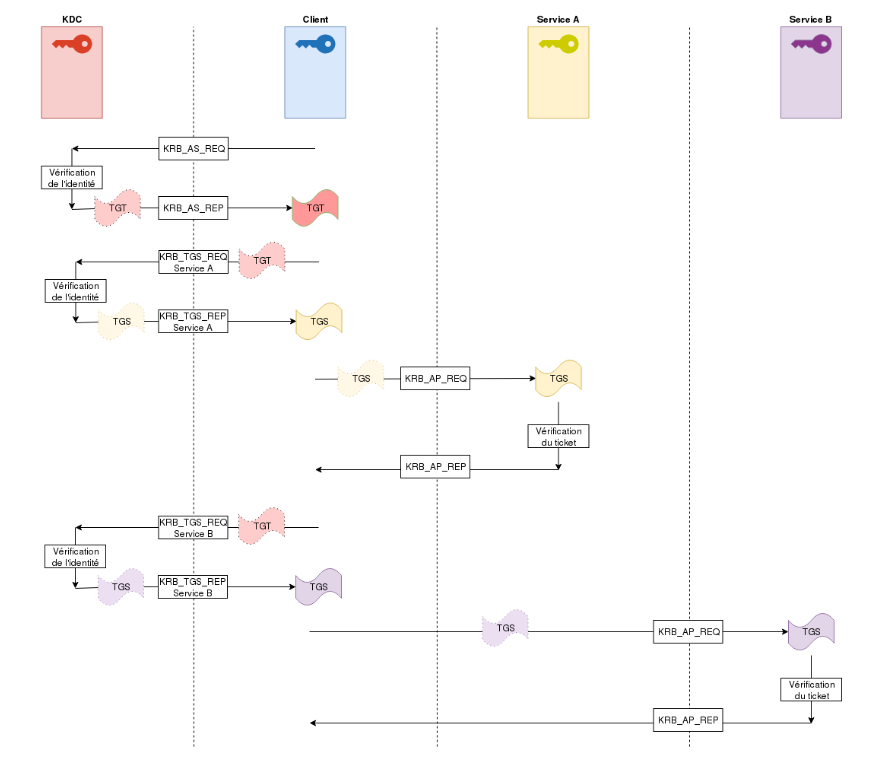

Le Kerberoasting est une attaque en environnement Active Directory basé sur la demande de Ticket de service et les attributs SPN.
Pour comprendre et effectuer cette attaque, il est primordial d’être familier avec la notion d’authentification Kerberos et les SPN.
Dans un environnement Active Directory, par exemple dans le contexte d’un réseau d’entreprise, contrôleur de domaine Kerberos est une solution commune de gestion des acces et des identité
Afin d’accéder à un service, Le client doit premièrement s’authentifier auprès du contôlleur de domaine Kerberos (KDC). Apres avoir vérifier son identité, le KDC fournira alors au client un Ticket Granting Ticket (TGT) et une clé de session chiffré avec le mot de passe du client.
Ce TGT, chiffré avec la clé du KDC donc inaccessible, contient divers informations:
Pour accéder a un service, le client va faire une requete de Ticket Granting Service (TGS) auprès du KDC. Le client envoie donc au KDC :
Le KDC pourra donc verifier de son coté l’identité du client, et lui retourner un paquet chiffré avec la clé de session contenant une nouvelle clé de session et le TGS chiffré avec la clé du service contenant:

Dans un environnement Active Directory, les membres de celui-ci peuvent acceder à des services. Ceux-ci peuvent être des fonctionnalités, logiciels, un share réseaux, un service DNS ou d’impression…
Le SPN réprésente ce service, il contient la machine hébergeant le service et le nom de celui-ci :
classe_du_service/hostname
Il peut aussi être de la forme:
classe_du_service/hostname.domain_name
Par Exemple, le SPN d’un service web tournant sur une machine nommé WEB-SERVER-01 sera présenté de la maniere suivante :
www/WEB-SERVER-01
Le kerberoasting est une attaque permettant de compromettre de nouveaux compte dans un Active Directory, dans une optique de mouvement latéral et délévation de privileges. Elle permet d’acceder a des machines hebergeant des services grâce à une faille du protocole Kerberos. Elle repose sur la clé du service avec laquelle le KRB_TGS_REP est chiffré.

En possédant un compte valide sur l’AD (pouvant donc avoir un TGT), on peut effectuer des demandes de TGS à n’importe quel service, par son SPN. En effet, le Domain Controller sous Kerberos ne vérifie pas les droits de l’utilisateurs demandant le ticket, il s’occupe seulement de fournir les informations de sécurité (PAC), c’est le compte de service qui s’occupe de vérifier les droits du demandeur.
Il est donc possible de lister les SPN de l’AD et d’effectuer une demande de TGS pour chacun de ces service.
La plupart des ces comptes possedent cependant des mot de passe complexe et changés à intervalle régulier, il faut donc viser des comptes dont les mots de passes sont géré par des humains.
Il est possible de retrouver ces comptes en appliquant un filtre LDAP pour filtrer les comptes de types user qui possedent un SPN.
Il suffit donc d’effectuer la requête de TGS pour ce service et de brutforce le mot de passe en offline afin de le récuperer.